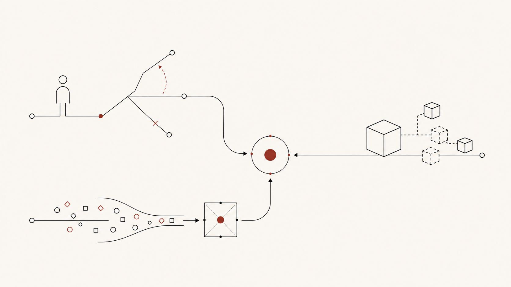

Trust needs edges
Features can wait. First, decide when the model may answer directly. Then mark the moments that need confirmation or human signoff.
Use cases
These scenarios name pressure a founder may recognize. They do not imply a client story, an approved case study, or a promised outcome.

Founder-held calls can pile up in one person's head until planning starts to depend on memory. An AI demo can look impressive and still fail the harder product questions: who uses it, when, and what happens after the first try. Data can sit in events and reports while the roadmap keeps moving on instinct.
If one of these situations feels familiar, bring that version of the problem to a product fit call.
Fractional leadership fit
The strategy is clear enough to build from. Still, every roadmap question drifts back to the founder before the team will commit.
The founder is still turning direction into tickets, refereeing product and engineering tradeoffs, and sorting the useful AI or analytics bets from the interesting distractions.
That bottleneck is the problem. The team does not need one more artifact; it needs a decision rhythm that survives after the first conversation ends.
The work starts with current goals, the product artifacts already in use, and a blunt read on where decisions are getting stuck. Then the scope can be sized honestly: fractional, sprint, or advisory.
From there, the first 2 to 4 week plan can focus on the pressure point that matters most: roadmap clarity, validation, product judgment, or operating cadence.
Use case
Demo day can look clean. The harder question comes after it: what should a user trust, what counts as a miss, and what is small enough for a first release?
Features can wait. First, decide when the model may answer directly. Then mark the moments that need confirmation or human signoff.
Pick the workflow first, then write down the failures that would make the tool hard to trust. If a demo step cannot be judged, leave it out of release one.
Edgecaser maps AI scope against the real workflow, including review points and build tradeoffs. The result is a first build the team can defend, without pretending the demo is production ready.
Use case
Events fire. Reports stack up. Dashboard fragments get passed around, but the team still lacks a shared way to decide what should change in the product.
The raw material may already be there: usage events, funnel notes, revenue exports, or founder-built reports. The hard part is choosing the few measures that deserve a place in the KPI frame and setting aside the ones that only create argument.
A report has failed its job if it never changes a roadmap call, a validation question, or a release decision. The work starts with the current goals and artifacts, then traces the product decision pressure sitting underneath them.
Ian has built analytics and BI functions from zero, so the fit is an operating rhythm, not a nicer chart. A first 2 to 4 week plan can tighten roadmap clarity, validation, product judgment, or the reporting habit that turns data into decisions people actually make.
Product fit call
If one scenario here hit close to home, bring your version to a 30-minute call with Ian Brillembourg. You will leave with a clearer read on what shape of product help fits the work.
Skip the sprawling discovery deck. The useful first move is a hard look at the product problem and the artifacts already on the table, then a decision about what the first 2 to 4 weeks should sort out.